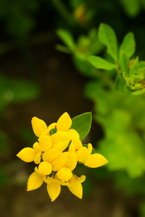

Birdsfoot-Trefoil (Lotus corniculatus)

Mating & Breeding System: Birdsfoot-trefoil (also known as broadleaf trefoil) is a legume, with a typical legume flower structure. It is largely self-incompatible, and depends on insects to produce seed. However, some varieties will set a small number of self-pollinated seeds, particularly if the flower has been flattened (e.g., by rain) and can’t be tripped. While self-pollination is therefore possible, in practice insects are required to move pollen. Cross-pollen may be more likely to set seed than self-pollen or pollen from a closely related plant.
Only large, strong bees can trip the flowers and successfully pollinate this plant. The flowers are designed to deliver pollen over multiple visits.
The plant produces abundant, concentrated nectar, and is considered a valuable honey plant in North America.
Pollination, Quality & Yield: Without visits from bees, only a few flowers will set fruit and seed production is very low. Pollinators are thus required for commercial seed production. Bees collect both nectar and pollen from the flowers, and there has been some research into high-nectar cultivars in an effort to increase bee visits
The seed pods of the crop are dehiscent (i.e., they shatter at maturity), which makes harvest difficult.
Pollination Recommendations: A flower can be pollinated after a single bee visit, although as many as 25 visits to each flower is necessary to get full pollination and maximum seed set.
Recommendations for honey bee stocking rates vary. One early study found that no more than 2.5 colonies per hectare were needed. However, other studies have recommended as many as eight colonies per hectare for growers in Ontario.
References
Bader K.L. & Anderson, S.R. 1962. Effect of pollen and nectar collecting honeybees on the seed yield of birdsfoot trefoil, Lotus corniculatus L. Crop Science 2:148-149.
Dobrofsky, S. & Grant, W.F. 1980. An investigation into the mechanism for reduced seed yield in Lotus corniculatus. Theoretical and Applied Genetics 58:157-160.
Free, J.B. 1993. Insect Pollination of Crops, 2nd edition. Academic Press.
Kevan, P.G. 1988. Pollination, crops and bees. OMAFRA publication 72.
Miller, J.D. 1969. Cross-compatibility of birdsfoot trefoil, Lotus corniculatus L. Crop Science 9:552-555.
Morse, R.A. 1958. The pollination of bird's-foot trefoil. Proceedings of the 10th International Congress of Entomology 4:951-953.
Murrel, D.C., Shuel, R.W., & Tomes, D.T. 1982. Nectar production and floral characteristics in birdsfoot trefoil (Lotus corniculatus L.). Canadian Journal of Plant Science 62:361-371.
Scott-Dupree, C.D., Winston, M., Hergert, G., Jay, S.C., Nelson, D., Gates, J., Termeer, B., & Otis, G. 1995. A guide to managing bees for crop pollination. Canadian Association of Professional Apiculturists, Aylesford NS.
Smith, M.V. 1960. Legume pollination in Ontario. Ontario Department of Agriculture Publication #139.
Turkington, R. & Franko, G.D. 1980. The biology of Canadian weeds 41. Lotus corniculatus L. Canadian Journal of Plant Science 60:965-979.